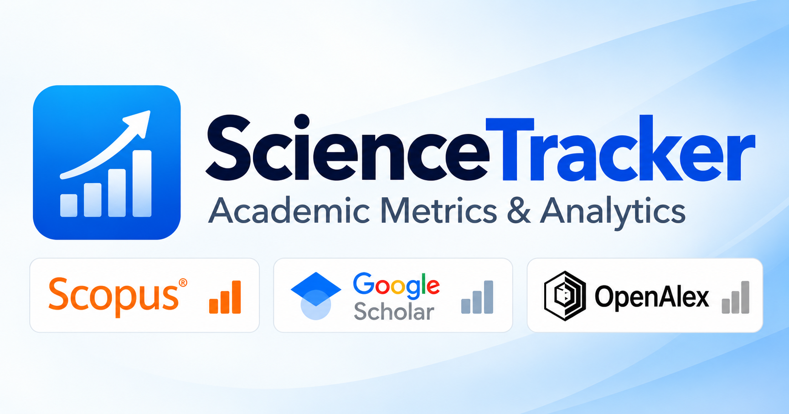

ScienceTracker
Free Windows citation and h-index tracker for Google Scholar, Scopus, OpenAlex and ORCID
Monitor your publications, citation counts and h-index automatically, and get notified when your academic metrics change.

Download ScienceTracker
Download the latest version and explore automated metrics monitoring, research analytics, and Telegram notifications.
Windows may block the first automatic launch of ScienceTracker because the application is not yet digitally signed. If a Windows security warning appears, choose More info and then Run anyway to allow the application to start.
📖 View Full Documentation & Setup Guide (README)
🚀 View ScienceTracker on Product Hunt
Multi-Source Monitoring
Track citation counts, publication totals, and h-index values across supported academic sources. When any monitored metric changes, ScienceTracker can show a Windows system notification and visually change the tray icon so you can immediately see that new citation, publication, or h-index activity has been detected.
Research Analytics
Analyze citation trends, publication types, citation thresholds, journal quartiles, and progress toward the next h-index.
Publication Insights
Review publication-level citation data, formatted bibliographic records, DOI links, and papers closest to increasing your h-index.
Windows System Tray
Runs quietly in the Windows system tray and notifies you when tracked academic metrics change.
Telegram Notifications
Optionally connect ScienceTracker to Telegram and receive notifications when citations, publication counts, h-index values, or tracked publication data change.
Automatic Updates
Built-in update support helps deliver compatibility fixes and new functionality through future releases.
Local-First Data
Metric history, analytics caches, and supporting metadata are stored locally on your Windows device.
Frequently Asked Questions
How can I track my h-index automatically?
ScienceTracker can periodically monitor h-index values from supported academic sources and notify you when a monitored value changes.
Is there a free app for monitoring Google Scholar citations?
Yes. ScienceTracker is free to use and can monitor publication totals, citation counts, and h-index values from a researcher's public Google Scholar profile.
Can I monitor Google Scholar, Scopus, and OpenAlex together?
Yes. ScienceTracker supports Google Scholar, Scopus, and OpenAlex in one Windows application. It keeps metrics from each source separate because the databases have different publication and citation coverage.
Can ScienceTracker notify me when my citation count changes?
Yes. ScienceTracker can display Windows notifications when monitored citation counts, publication totals, h-index values, or tracked publication data change. Optional Telegram notifications are also available.
Does ScienceTracker require a Scopus API key?
Yes. ScienceTracker updates Scopus data through the Scopus API, so a valid Scopus API key is required. Available Scopus data may also depend on the user's Elsevier access and institutional authorization.
Does ScienceTracker run in the background?
Yes. ScienceTracker can run in the Windows system tray and periodically check selected academic profiles.
Is ScienceTracker free?
Yes. ScienceTracker is free to use.
Does ScienceTracker combine citation counts from different databases?
No. Google Scholar, Scopus, and OpenAlex index different sets of publications and citations, so ScienceTracker keeps source-specific metrics separate.
Support ScienceTracker
ScienceTracker is developed and maintained independently. If you find it useful, you can support future development with a voluntary contribution.